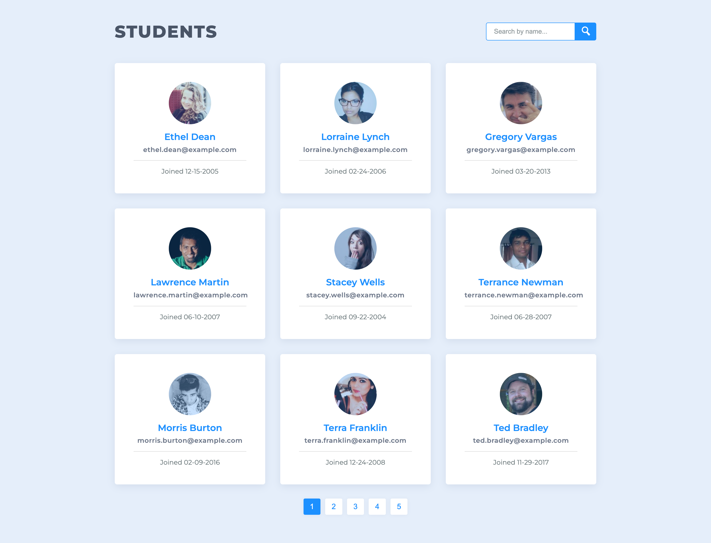
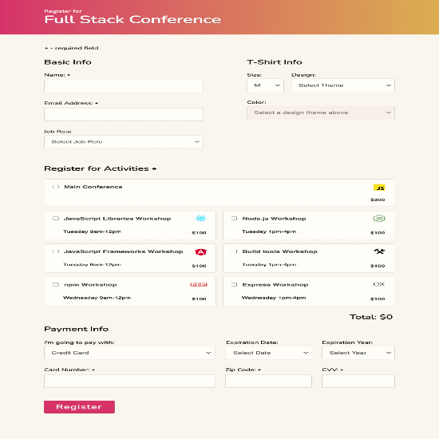
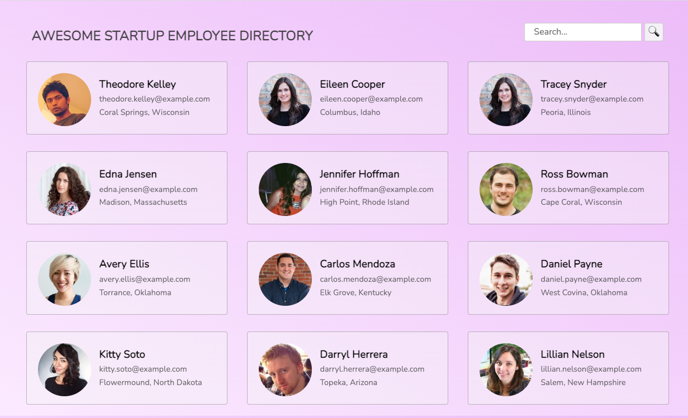

Frontend engineer with 4+ years building production-grade interfaces at Intuit (QuickBooks Payments). Experienced in React, JavaScript, and component design with a focus on data accuracy and clean UX.
Experienced with SQL, MongoDB, Node.js, and REST APIs. Background in CRM systems (Redtail), financial data platforms (NetSuite, QuickBooks), and building data workflows that improve accuracy and compliance.
Skilled in designing data tracking systems, dashboards, and reporting frameworks. Experienced with data quality assurance, workflow documentation, and training non-technical teams on data tools and protocols.

Manages and displays a dataset of 42 student records with dynamic
pagination (9 records per page) and real-time search filtering.
Demonstrates structured data display, filtering logic, and
user-friendly navigation of large datasets.
Stack: JavaScript, HTML, CSS

Accessible registration form with real-time field validation,
conditional logic, error handling, and WCAG accessibility features.
Reflects experience ensuring data entry accuracy and
compliance — critical skills for case management and reporting systems.
Stack: JavaScript, HTML, CSS, Accessibility (WCAG)

Fetches and displays live employee data from a public API,
rendering 12 profile cards with modal detail views and search filtering.
Demonstrates API integration, dynamic data rendering, and
UI patterns common in data dashboards and reporting tools.
Stack: JavaScript, Fetch API, HTML, CSS
Hi, I'm Juliana — a data-driven technologist based in the Bay Area, originally from Colombia.
I started my career in international business and finance, then transitioned into tech through an apprenticeship program at Intuit, where I was promoted from Software Engineer I to II within 18 months. That path gave me a unique combination: I understand both the business side of data and the technical side of building the systems that manage it.
My work spans frontend engineering at scale (QuickBooks Payments, millions of daily transactions), CRM implementation and data workflow design, and financial data management across multiple industries. I'm fluent in English and Spanish, which helps me communicate complex technical concepts to diverse teams.
I'm passionate about applying these skills where they make a real difference — in organizations that use data not just for profit, but for people.